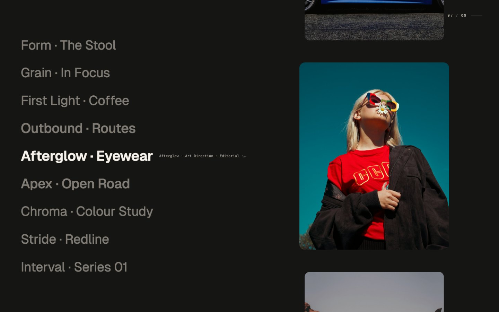
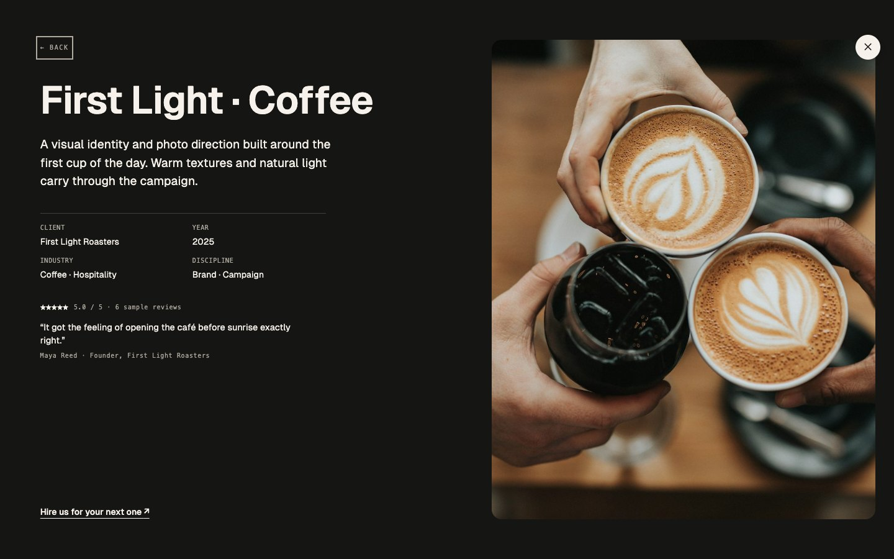
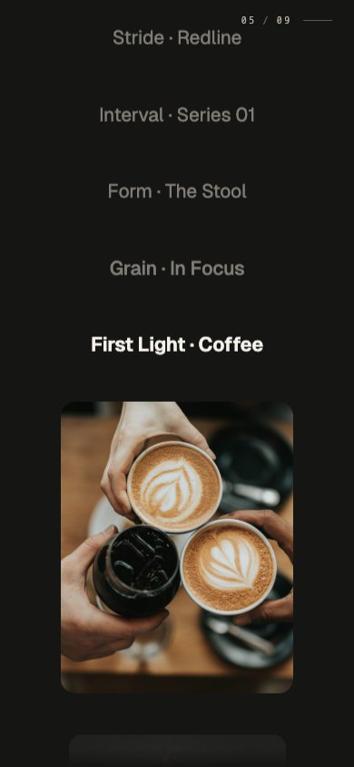
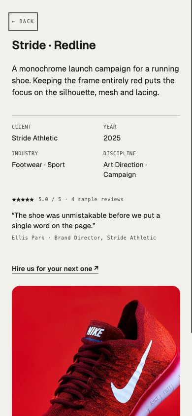

Create a blank page without header and footer. Name it "folio" and implement it according to instructions in folio.md
Folio is a standalone, full-viewport portfolio reel. Titles and portraits move in opposite directions and pair at the active position. Each project opens into a detail panel that returns to the same position when closed.
folio.md (44,686 bytes) specified the three-copy loop, two
responsive layouts, variable type, timers, input rules and
shared-element transitions.
inputs.json.
Vite builds src/pages/folio.njk into folio.html.
index.tsx renders the React interface;
reel.ts updates the strips and coordinates the detail states;
config.ts holds the layouts and timings.
The active position is maintained in the middle set of projects. When it crosses a boundary, the draw step shifts both the current coordinate and its target by a whole copy. The frame loop idles when motion has settled or the page is hidden.
The 1.7-second entrance locks page scroll and can be interrupted by input. A click navigates to the chosen project along the shorter direction. GSAP moves shared title and image proxies into detail over 0.95 seconds and returns them over 0.85 seconds, with separate scrim and accessory timing. The proxies share the original image, crop, type metrics and rendered corner radius.
A container resize updates both strips. Below 768 pixels the reel stacks and the detail view scrolls as one column. The page supports keyboard navigation, focus restoration and an immediate reduced-motion path.
const anchored = count + wrap(pos - count, count);
target += anchored - pos;
pos = anchored;snapTimer = setTimeout(() => {
if (touch) return;
target = Math.round(target);
requestDraw();
}, config.snapMs);from.concat(to).forEach((item) => {
item.style.visibility = "hidden";
});
flights.forEach(({ proxy, tween }) =>
time.to(proxy, { ...tween, duration, ease }, at),
);opening.eventCallback("onComplete", null);
opening.eventCallback("onReverseComplete", finalizeClose);
opening.reverse();npm ci
npm run build
python3 -m http.server 8080
Open http://localhost:8080/folio.html. Edit project copy in
items.ts. Adjust smoothing, snapMs,
entranceSeconds, openSeconds and
closeSeconds in config.ts.
The production build and strict TypeScript check passed. Chrome verified the reel at 1440×900, 768×1024, 390×844 and 375×667. Checks covered the entrance interrupt, forward and backward wrapping, snap alignment, counter pairing, local image loads, cursor ring, inactive-item navigation, reverse detail, page scroll lock, mobile scrolling, touch, keyboard, reduced motion, and both colour schemes. The first shared title and image rectangles matched their sources with zero measured geometric offset on the sampled desktop open.
An uninterrupted entrance restored page scroll. The explicit mount, pause, play and destroy API passed, including teardown during an open detail. A 1.25-second desktop reel sample recorded zero long tasks. The browser runs recorded no application console errors.



